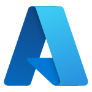
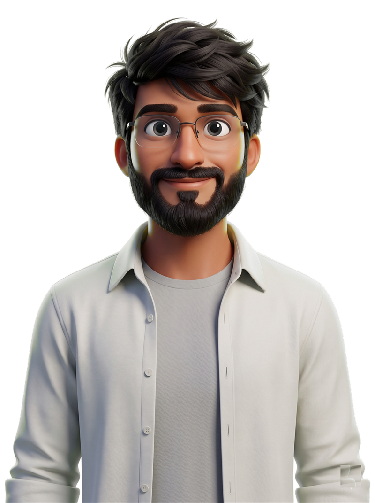
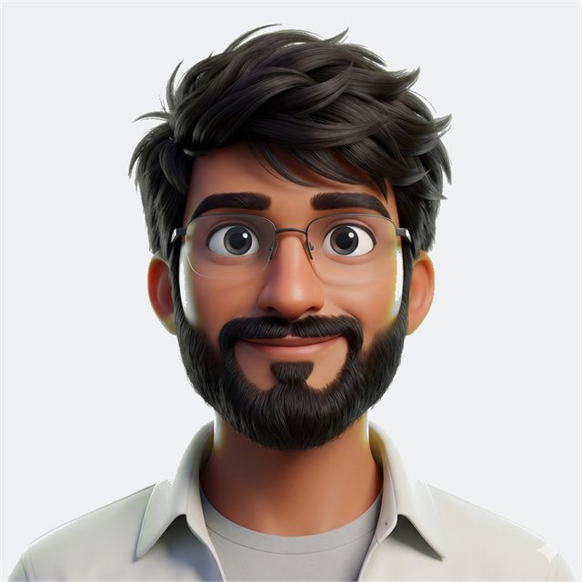

Microsoft Azure Azure DevOps TerraformBuilding release pipelines that are repeatable, observable, and secure by default. Five years keeping production healthy across prod, UAT and staging.


Microsoft Azure Azure DevOps TerraformPipelines, plans, pods and dashboards: the screens I live in. Nothing here is a mock-up of someone else's job.
YAML multi-stage pipelines that build once, run unit tests and a SonarQube gate, then promote the same artifact from dev to production.
Every release follows the same four stages, from a pull request to a monitored deployment.
Work lands in Azure Repos through a branching strategy and pull requests, so every change is reviewed before it reaches main.
A YAML multi-stage pipeline builds the Docker image, runs unit tests and a SonarQube quality gate, then pushes the image to ACR tagged by build id.
Terraform describes every Azure resource as code, so dev and production are created identically, with secrets in Key Vault and access through Entra ID and RBAC.
Images roll out to Container Apps and App Service, and Azure Monitor, Application Insights and Grafana confirm the release is healthy.
YAML multi-stage pipelines in Azure DevOps that build Docker images, run unit tests and SonarQube analysis, and deploy to App Service and Container Apps across development and production, with Azure CLI steps and Entra ID service connections for secure, automated access.
Reusable Terraform configuration for App Service, Container Apps, Key Vault and storage, so every environment is provisioned identically from code and infrastructure changes go through pull requests like application code.
Images built in the pipeline, tagged and stored in Azure Container Registry, and rolled out to Container Apps, plus mobile build and release automation for publishing to the Apple App Store and Google Play Store.
Over three years of production, UAT and staging support: 24/7 NOC operations, incident management with Grafana, Prometheus and New Relic, log analysis and L1/L2 troubleshooting inside SLA targets, with root-cause analysis and escalation on critical systems.

An Azure DevOps Engineer with five years across cloud operations and delivery automation. I started by supporting Kubernetes workloads and running 24/7 operations, and now design the pipelines and infrastructure that ship software: YAML multi-stage pipelines, Terraform, Docker and ACR, Container Apps and App Service, with Entra ID, Key Vault and RBAC keeping access secure.
Open to Azure DevOps, cloud engineering and platform roles. Tell me what you're shipping and where it hurts, and I'll come back with a plan.